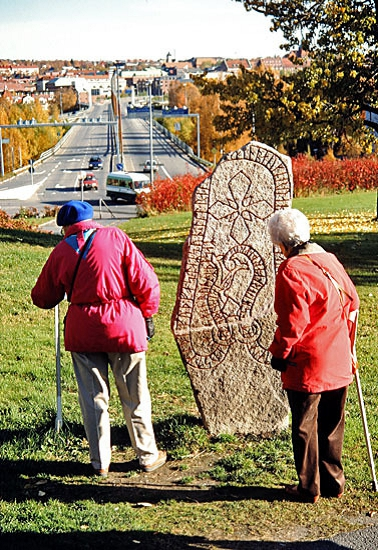

48077331 Helen Guttormsdatter
* omkring 1165 Sverige
† efter 1230 Vreta kloster (E)
96154662 Guttorm Östmansson Jarl
* före 1140 Frösö (Z)
† 1171-04-14 Frösö (Z)
Jarl av Sverige under kung Karl Sverkerson
Blev minst 31 år

192309324 Östman Gudfastsson
* före 1100 Västerhus, Frösö (Z)
† efter 1140 Västerhus, Frösö (Z)
Blev minst 41 år
96154663 Ingrid Guttormsdatter på Rein
* 1136 Rein. Rissa, Norge
† efter 1180 Trondheim, Norge eller Svealand, Sverige
Blev minst 44 år
192309326 Guttorm Åsulvsson på Rein
* omkring 1120 Rein. Rissa, Norge
† omkring 1183 Rein. Rissa, Norge
Blev ca 63 år
384618652 Åsolv Skulesson på Rein
* 1075 Rein. Rissa, Norge
† 1150 Rein. Rissa, Norge
Blev högst 75 år
384618653 Tora Skoftesdotter Giske
* 1070 Giske, Norge
† 1135 Rein. Rissa, Norge
Blev högst 65 år
192309327 Eldrid Jonsdatter Smør av Blindheim
* 1114 Blindheim, Vigra, Norge
† 1144 Uppsala (C)
Blev högst 30 år
384618654 Jon Arnesen Smørbalte
* före 1070 Huk, Norge
† 1150 Blindheim, Sunnmøre, Norge
Blev minst 80 år